Overview
Purpose
GoClimb is a platform designed to be a center of information for both new and advanced rock climbers, with a greater emphasis on newer climbers. It can be hard to find new places to climb and learn what gear to use. This website will feature recommended locations, what kind of gear you will need, and the benefits of climbing. It will include the following different types of climbing, Free solo, Top Rope, and Bouldering. This website is unique due to its focus in and around Rexburg and focus on new climbers.
Audience
Anyone interested in learning more about Rock climbing
Branding
Website Logo
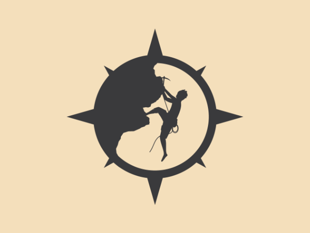Style Guide
Color Palette
| Gray-green | Vibrant Red | Deep Red | Dark Gray |
|---|---|---|---|
Typography
Heading Font: 'Lucida Sans', 'Lucida Sans Regular', 'Lucida Grande', 'Lucida Sans Unicode', Geneva, Verdana, sans-serif
Paragraph Font: "IM Fell French Canon"
Navigation with Hover
Site Map
Wireframes
Home
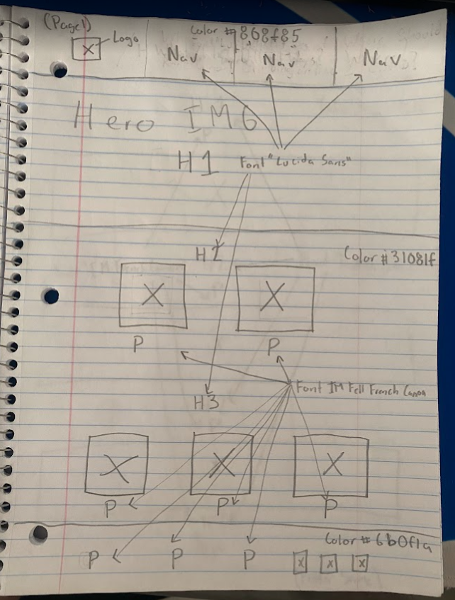H1 Go CLimb
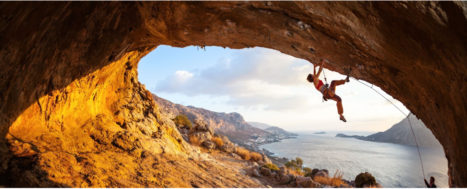H2 What is Rock Climbing?
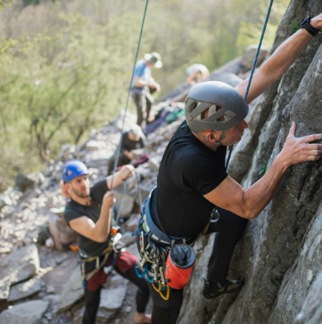Rock Climbing is simply put climbing natural rock formations or artifical walls with or without ropes.
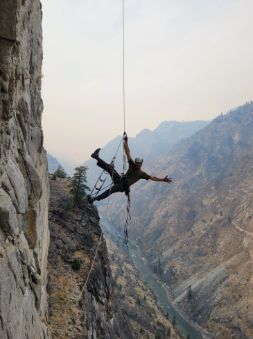Rock Climbing is a sport, but also a hobby enjoyed by millions worldwide.
H2 Why should I go Rock Climbing?
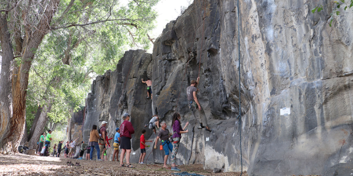Community
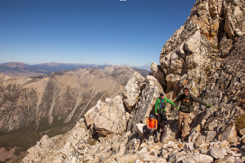Enjoy Nature
Exercise
Page 2
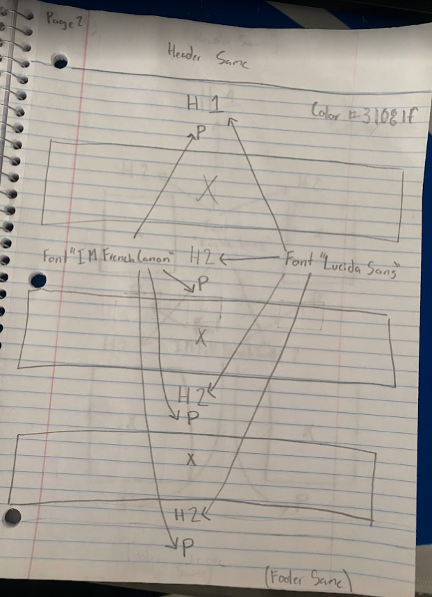Page 2
Diffrent ways to Climb?
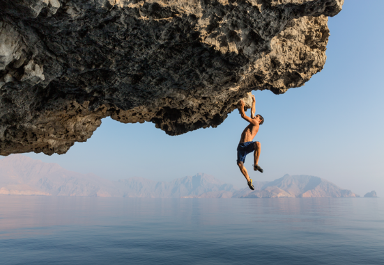h2 Free Solo
Free solo climbing is a form of rock climbing where the climber climbs without ropes or any form of protective equipment.
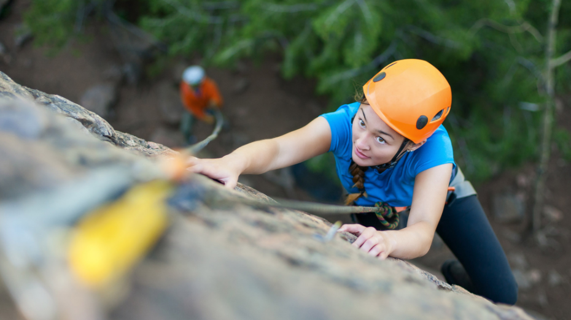h2 Top Rope
Top-roping is a beginner-friendly climbing style where the rope runs from the climber, up to a pre-rigged anchor at the top of the climb, and back down to a belayer on the ground.
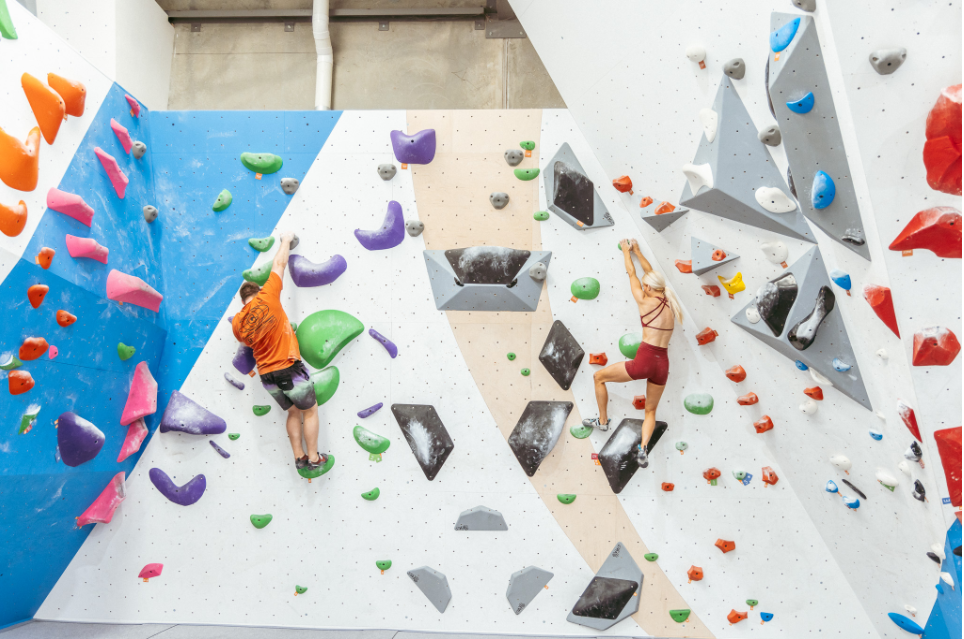h2 Bouldering
Bouldering is a form of rock climbing that involves climbing short, low routes on a rock or wall without ropes or harnesses, using safety mats for protection.
Page 3
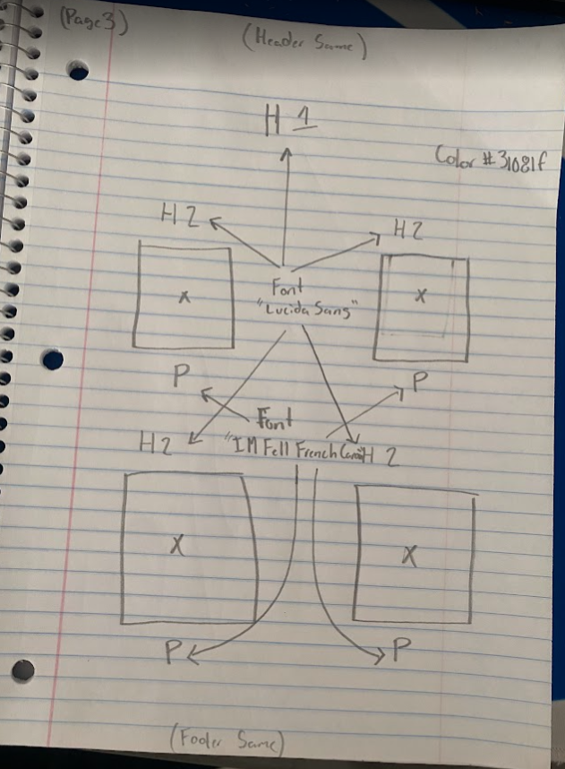H1 Where should I Climb?
h2 The Rock Gym
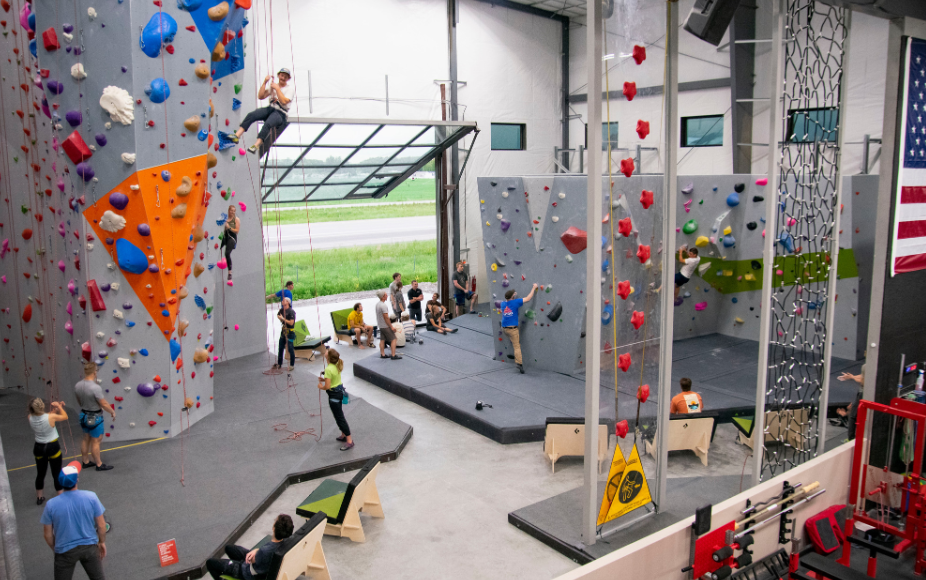The Rock Gym is anamazing beginner-friendly place to learn how to rock climb
h2 Heise Rock
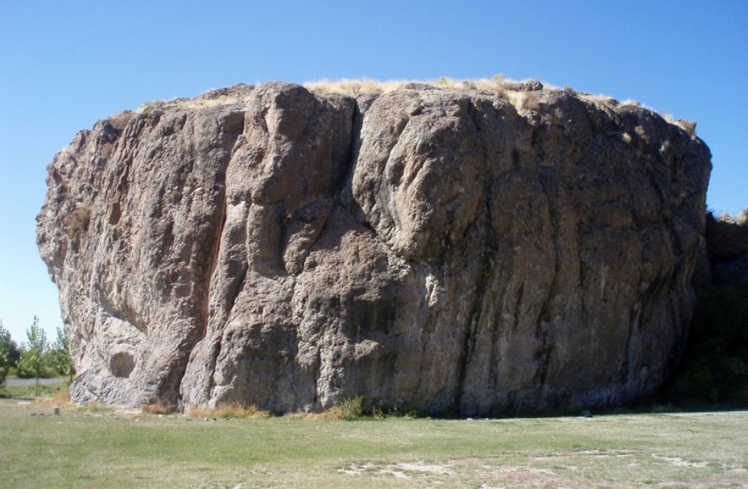If you have the gear and knowledge this Rock has some really good options from all around.
h2 Teton Dam
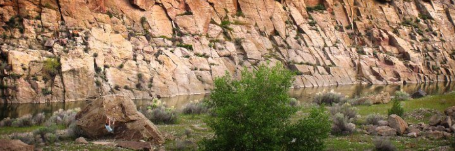There are a lot of bouldering options here. If you dont have equipment this could be a great option.
h2 The City of Rocks
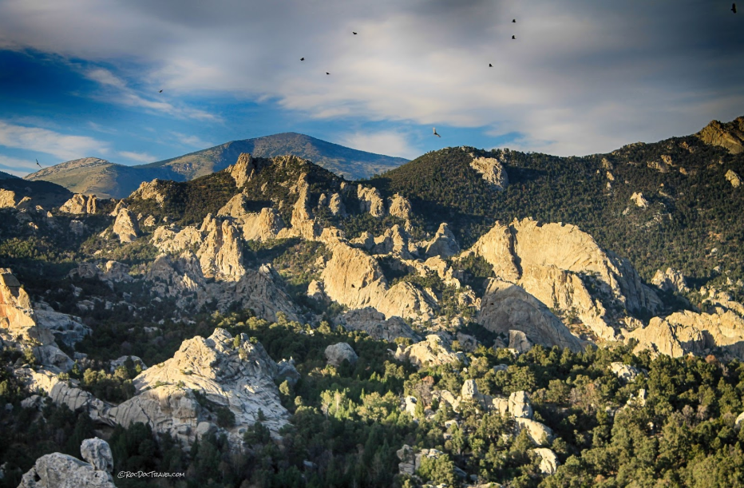Its a couple hours drive away but there are so many options here. Options from never touched a rock before to the best in the world.